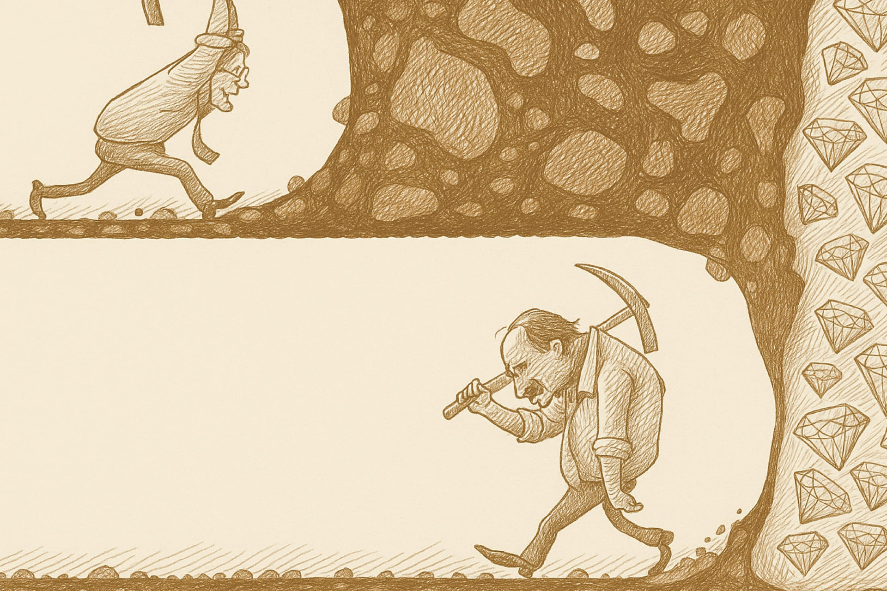

分析財報是分析企業現況表現，而計算內在價值則是要算出值多少錢，也就是說「先找出優秀企業」接著「再計算這間企業應該值多少錢」。
Warren Buffett 遇到 Charlie Munger 後，原本奉行雪茄菸屁股理論的投資哲學調整為真正的價值投資，比起用便宜價錢買進普通企業，更應該用合理價錢買進優秀企業。所以我們得分析財報找到優秀企業，再計算出企業的內在價值，藉以判斷我們應該用多少錢買進最合理。
什麼是內在價值？
我們透過報紙、電視、網路或 APP 等媒介在股市交易日看到的股價，就是很多買賣方交易、跳來跳去的一堆數字，那個價格是當前檯面上的交易價格，內在價值則是隱藏於檯面下，需要從財報裡面挖掘出來的數字，對於價值投資者來說，那才是企業真正應該要有的價格。
判斷買賣時機
內在價值作為價值投資者的買賣判斷依據。當交易價格低於內在價值，亦即當前價格被低估，就是買入時機，買入後長期持有等待價值反應；反之，就是價格被高估，該是脫手持股的時機。
假設您算出某間企業的價值是 $100，當前股價 $90 就是您可以買入的時機。
- 交易價格 < 內在價值 = 買入！
- 交易價格 > 內在價值 = 賣出
留下安全邊際
學習計算內在價值之前必須先有個認知，沒有絕對正確的答案，就算用同樣的方法，也可能每個人計算出不同結果。所以！必須預留空間，降低失誤帶來的風險，這個空間就稱為安全邊際。
假設您算出某間企業的價值是 $100，當前股價 $90 馬上買入似乎符合預期，但要考慮我們可能誤判，或者情勢隨時會發生變化。您可以預留2成至4成的安全邊際，也就是說等到股價 $60 至 $80 再買進，即便您真的誤判，也不至於遭受太大損失；反之，如果判斷正確，您可以多賺2成至4成的利潤。
安全邊際要預留多少空間，全取決於自己的判斷及風險承受能力，空間留越多則越難等到買入時機、空間留越少則風險越高。
- 安全邊際少： 買入時機不易等到、風險較低。
- 安全邊際多： 買入時機容易等到、風險較高。

常用的內在價值計算方法
即使是同一間企業，每位價值投資者也可能會用不同角度看待、採用不同的計算方式，因而得出不同價格。
例如某企業，A先生看待為成長股、B先生看待為現金製造機器，所以A先生用本益比計算、B先生用現金殖利率回推計算，蘋果就是兼具這兩項優點的企業。
本益比 PE Ratio
適合用於成長股，幾乎是最常見的估價方式，本益比原始含義是評估買進股票後需要多久時間賺回本金，本益比倍數就表示需要賺回股價的年數。當然這麼估計並不精準，有很多變動因素，但現在已經被大部人拿來看作是一種單位「專家認為 ABC 公司價值20倍本益比 … 」。
本益比會被用來比較自己的歷史本益比，及競爭對手的本益比，判斷目前價格是相對昂貴或便宜，透過比較來判斷「相對」位階。最後將您認為合理的本益比乘上每股盈餘，就得出內在價值。
股價淨值比 PB Ratio
這是非主流的計算方式，適用於資產股或較無成長性的股票類型。
淨值是資產減去負債，也就等於是資產負債表裡面的股東權益，將股東權益除以在外流通股數得出每股淨值，再將股價除以每股淨值，就得到股價淨值比。
從上面的計算過程可以看得出來，股價淨值比的意義是每花1塊錢可以買到公司多少資產價值，可以買到高股價淨值比，表示公司土地設備等資產價值相當高，而股價卻偏低，通常出現在營運較無成長性、帳上資產很多的老企業。
最後將您認為合理的股價淨值比乘上每股淨值，就得出內在價值。
未來現金流折現
適合用於營運穩定且持續產生現金流的公司。從巴菲特的觀點來看，內在價值就是未來能創造的現金流，計算未來N年累積的現金，扣掉通貨膨脹後回推計算現值。
現金殖利率回推
適合用於營運穩定且持續發放現金股利的公司，算是最保守的投資方法。股票本質就是投資公司並參與獲利，投資人拿到公司獲利後反饋的現金股利或股票股利，跟著公司成長。
因此現金殖利率也能作為回推估值的方式，從獲利盈餘估算當年度可能發放的現金股利，帶入過往常見的殖利率，就能夠得出我們希望看到的股價區間。
其他內在價值計算方法
當然還有其他內在價值計算方法，以後會陸續介紹，幫助投資者根據自身需求和市場情況選擇合適的方法進行分析，也練習用不同角度看待同一件事。